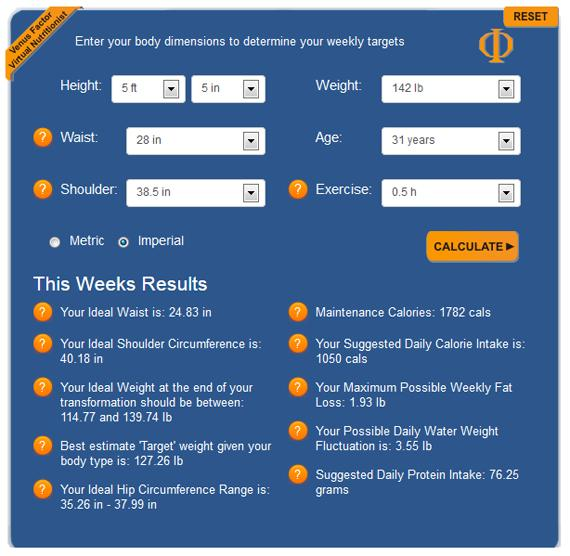
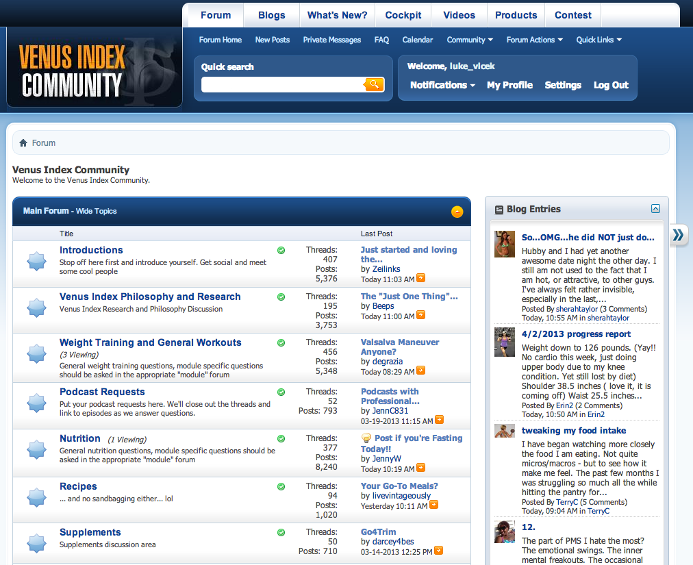

Venus Factor - Best Weight Loss System For Women | Is It Really Work?
What is the Venus Factor?
The Venus Factor is a unique weight loss program designed for women according to their specific needs. The program requires 12 weeks for its completion and brings your body in the right shape. It helps to rebalance body hormones that control metabolism and weight gain.
The system focuses on “Venus Factor Diet” that takes a variety of factors into consideration. The height, age, weight, body type and fitness level are the factors that determine nutritional needs of women. The Venus Factor program creates a custom diet plan for each women based on her specific needs. The guidelines provided in the Venus Factor will help you choose the right type of foods for each meal. It provides you information about type of foods, intake timing and calories that will bring the right change.
Most importantly, the Venus Factor System will focus on “Leptin” – A key hormone that controls female The Venus Factor book reviewmetabolism. It is Leptin, whose right balance will ensure that you keep burning fat. The Venus Factor ensures to eliminate “Leptin Resistance”, so that you can use full burn fat potential of your body.
Already Decided?
That's great! Click the button on your right and take the action now.
Apart from the diet perspective, the Venus Factor also includes a detailed exercise program designed for women body. All the exercises can be performed at home and you do not need to join the gym to carry them out.
After buying the Venus Factor, the program offers a membership and access to login to exclusive Venus Factor Community. This community will offer all the help and support that a participant requires during her weight loss journey. In the exclusive access to forum, blog and community, etc, you will get to know all the weight loss tips, research and development by John Barban for rapid weight loss.
How Does the Venus Factor System Work?
The Venus Factor System works in different phases. The creator of the Venus Factor highlighted a major flaw that causes the women to gain extra weight. The Leptin hormone is the major factor that causes the body to become over-weight. It is Leptin, which controls the amount of fat stored in the female body.
If you are able to control Leptin and its sensitivity in blood, you can definitely lose weight by burning fat. As women get older, their bodies become chubbier after having children and they lose their leptin sensitivity. To put it in different words, their bodies become more resistant to leptin naturally. This leads towards fat storage instead of burning it.
The Venus Factor system is specifically designed for women. It completely works on a different approach and thus unique from other popular weight loss programs like 3 Week Diet.
Here’s how the Venus Factor Program works:
Leptin Venus Factor: This is the primary factor to burn fat in women. Leptin is present in both men and women. However, women tend to have greater amounts of leptin as compared to men.
Resistance to Leptin: The VF works to decrease the resistance of female body towards leptin. And, thus it can help to accelerate weight loss naturally.
No Fasting: During fasting, the leptin levels drop in the body, so it is never recommended to fast in order to burn fat in women.
Components of Venus Factor System: What’s inside the program?
The Venus Factor system is comprised of five major components. Here are the details:
-
The Essential Fat Loss Diet Guide This part explains all those foods that help to increase the Leptin resistance in the body. For e.g.: soy, snacks, low fiber, carbs, etc. The users also get to learn the combination of right foods that increase the leptin sensitivity. You will learn how to avoid specific foods that are harmful for leptin. Ultimately, the results are healthy and toned female body.
The Venus Factor diet plan is quite detailed that also focuses on your long-term goal, i.e. not to become overweight again. While some of the popular weight loss diet plans only focus on diet but Venus Factor also focuses on exercise. The modern research also shows that exercise is equally important when it comes to maintaining perfect body weight in the long run.
When it comes to weight loss, a low calorie diet is not a very good idea. The low calorie intakes lowers the leptin levels inside human body. So, the metabolism, appetite and fat burn negatively gets affected with decreased leptin levels. This is why Venus Factor never recommends very low calorie diet or even fasting. Instead, the program outlines a definitive Venus diet plan that will not only boost leptin levels but also its sensitivity inside human body.
-
The 12 Weeks Workout Plan The Venus Factor Workout plan is comprised of 3 months (12 weeks). This plan can be carried out either at gym or your home as per convenience. It is a step by step approach, which is equally effective and easy to follow. This ensures that you get a toned hourglass body, which is desired by most of the women.
The Venus System can be well-understood with help of videos available online. These Venus factor workout videos are easy to access and watch online. Additionally, you can also download them on your devices to provide step by step video guidance without help of high-priced personal exercise trainers.
-
The Venus Virtual Nutritionist Software App The Venus factor not only eliminates the cost of using personal trainers but it also provides you a handy app to automate various processes. The virtual nutritionist software app helps to count all the calories on its own, thus helping you to compare your actual statistics with ideal ones. It enables you to see the differences and the amount of effort required to reach your ultimate goal (losing weight).
 -
The Venus Index Podcast The Venus Index Podcast is designed to motivate in order to reach your goal. This is an innovative instructional tool that enables you to connect mentally with other struggling women, who are going through the same phase of losing weight and achieving success with the Venus Factor system. This is a unique and quite powerful tool for Venus Factor users.
-
The Venus Community In addition to the podcasts, the Venus Community is yet another powerful platform to connect with other women using the Venus Factor. The community provides complete support to women in various ways. You have complete login access to the forum, where you can read and contribute inspirational stories and reviews about the system. Some of the best weight loss recipes and tips can be also found within the Venus Community.

Pros and Cons of the Venus Factor System
The Pros and Cons of the Venus Factor system are listed below:
Pros
Well-proven and easy to follow approachpros and cons of venus factor system
Focuses on Leptin protein to lose weight
Quick results for weight loss
Women centric unique program for complete toning of female body
5 Major Parts of the Venus Factor system make it super-easy to use and implement
Saves lots of cost compared to other weight loss programs
Fast Customer Support (24/7)
Risk-Free Money Back Guarantee of 60 days
No Shipping fee as program is downloadable and comes in digital format
What Are You Waiting For?
Your Purchase is Backed Up by 30 Days Money Back Guarantee. If You Don't Like The Product, Give It Back And You Will Be Refunded With No Questions Asked!
Cons
Only works for women (Not applicable for men)
Not available in hardcopy (if you want read in hardcopy, just download and take print outs of the Venus Factor eBook PDF file)
Related Post
QUIT SMOKING MAGIC REVIEW
 Addiction/
Addiction/
ALCOHOL FREE FOREVER - HOW TO QUIT DRINKING TODAY FROM THE PRIVACY OF YOUR HOME

Recent Post
Bow Legs No More - Looking for a Permanent Remedy for Bow Legs Without the Need for Surgery?
 Denatal Health/
Denatal Health/
Dentist Be Damned How To Get Rid Of Toothache Review - Does It Really Work?
 Dental Health/
Dental Health/
Tooth Defender 100% Natural Oral Care Review - Does It Really Work?
 Beauty/
Beauty/
Skin Whitening Forever - How To Whiten Your Skin Naturally